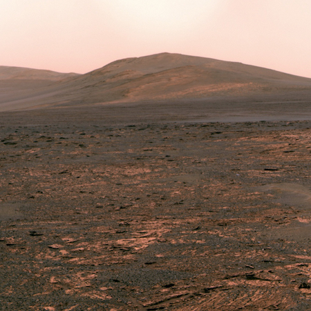

What does Mars look like?

NASA's Hubble Space Telescope took this picture of Mars as it was making its closest approach to Earth in 60,000 years!

In this picture of Mars, you can see water-ice clouds, polar ice, and some rocky features.
NASA's Mars Exploration Rover Opportunity took this picture with its panoramic camera near "Solander Point" on Mars.